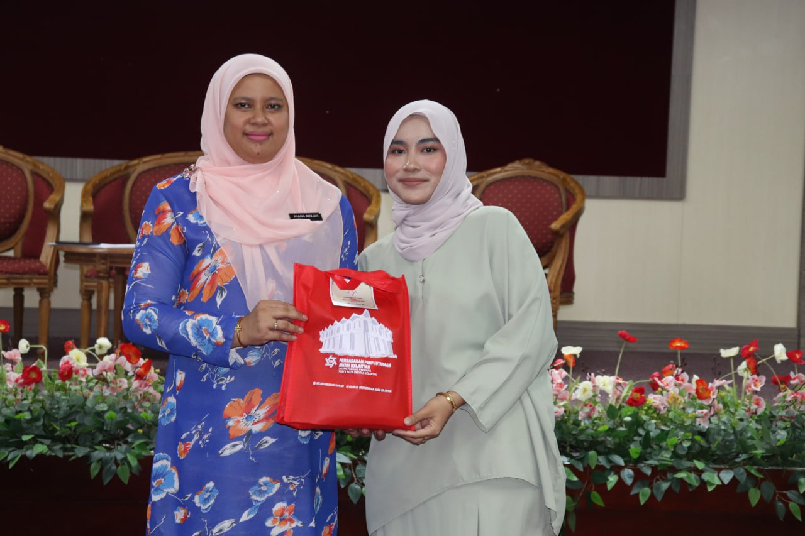
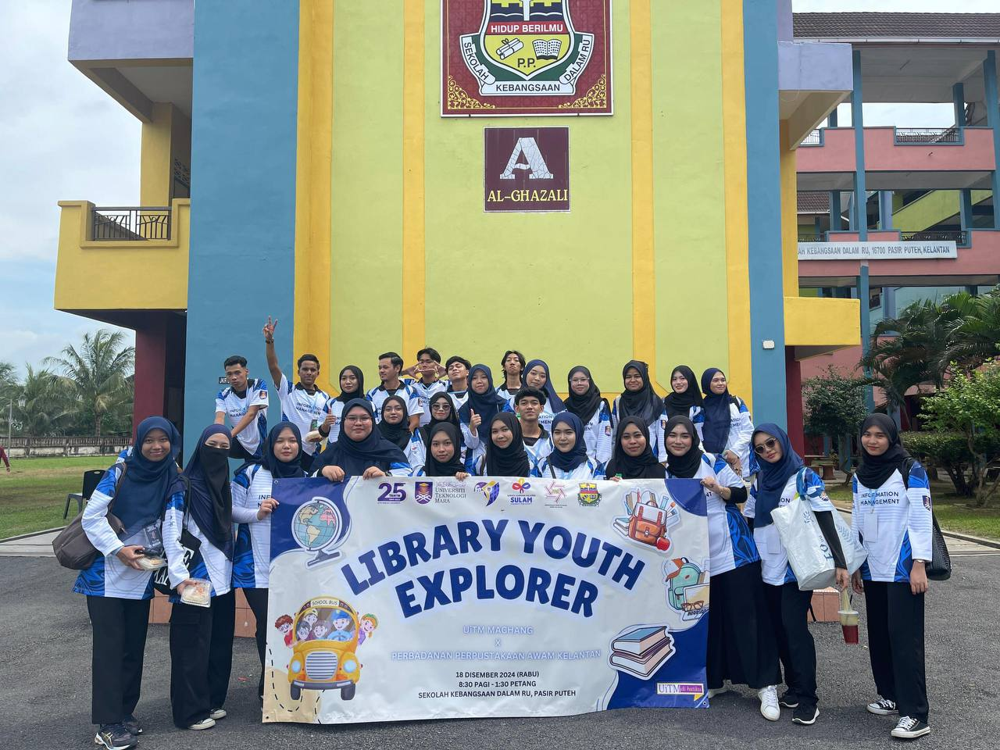
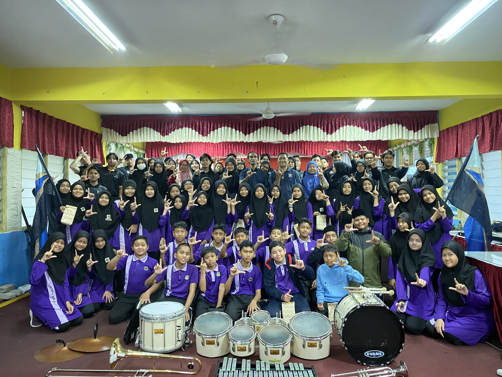
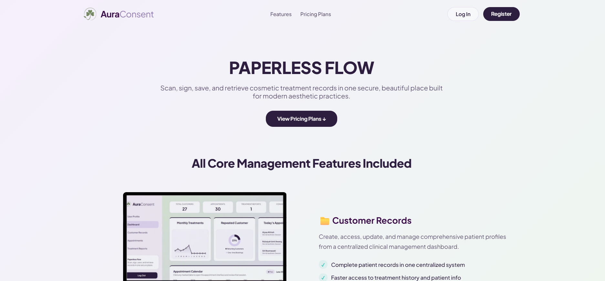

Portfolio
A showcase of practical projects, industrial internship deliverables, and outreach initiatives.

6 PhotosIndustrial training / Perbadanan Perpustakaan Awam Kelantan
Completed a 2-month industrial training internship at Perbadanan Perpustakaan Awam Kelantan, rotating progressively across all internal departments to gain hands-on operational and customer service experience. Demonstrated leadership by serving as the Person-in-Charge (PIC) for the "Pameran Tokoh" exhibition during the Book Festival. Contributed creative design skills by co-designing the official programme booklet and crafting professional posters for the library corner.

5 PhotosCommunity Outreach
Served as Program Treasurer, managing program finances and budgeting for an outreach initiative at Sekolah Kebangsaan Dalam Ru, an outskirt elementary school. Demonstrated strong leadership and teamwork by leading group learning sessions, introducing students to the importance of technology, the benefits of knowledge, and the crucial role of libraries in gaining accurate information.

5 PhotosSULAM-Embrace The Groove
Served as a committee member under the Program & Activities Bureau for the SULAM community outreach program organized by the Kor Kesatria Brass Band UiTM Cawangan Kelantan at Sekolah Kebangsaan Hamzah 1. Actively engaged with students to introduce and share the fundamentals of the university's Brass Band club culture, while leading interactive sessions to teach the basics and artistry of Colour Guard performance. Fostered teamwork, creativity, and music appreciation among young learners through hands-on mentoring.

7 PhotosAuraConsent / Paperless Flow
Developed AuraConsent, an advanced web-based clinic management and electronic documentation system tailored for modern aesthetic practices. The platform features an executive analytics Dashboard tracking key business metrics, a centralized Customer Records database with detailed skin profiles, and smart Appointments scheduling with customizable availability and daily limits. It also includes comprehensive Treatment Reporting for clinical evaluations and an innovative Cross-Clinic Health Record Exchange module that securely authorizes and manages patient record transfers between external aesthetic providers.
 2 Photos
2 Photos
MyMUET / In-Progress FYP
MyMuet is an all-in-one digital learning platform that streamlines MUET exam preparation for UiTM students through interactive practice modules, AI-driven assessment tools, and centralized performance tracking for candidates, UiTM Academic Affairs (HEA), and parents.